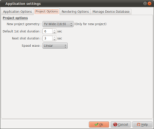
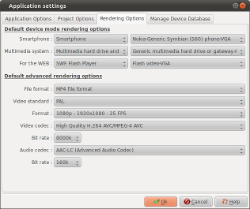
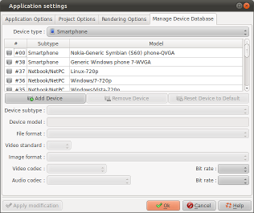

Introduction
The Application settings dialog
allows you to define options for the application. This dialog
is called with the
button on the toolbar.
It consists of following 4 tabs:
Application options

Application options
| Remember Windows size and positions |
|
| Remember last used folders |
|
| Enable "raster" Graphics
system |
For Linux users only :
|
Preview options
| Frame
rate |
Reduce this number on slow computers or if the gauge for your multimedia reader is frequently in the red zone. |
| Image transformation (Apply to video during preview) |
|
Editor options
| Coordinates unit |
This option allows to
select the unit for the coordinates which will be used
in the properties dialog. You can choose:
|
| Object
position |
This option allows you to
adjust the positions occupied by new objects inserted
into the timeline.
|
| Multiple
file insertion |
This option allows you to
adjust the way files are sorted when you select several
files in Add
file.
|
| Object deletion |
If this box is checked, a
confirmation prompt will be displayed every time you
remove an object:
|
| Default
framing |
Defines the framing to be
made during the file insertion:
|
| Default
transition |
Defines the transition to
be inserted between inserted slides :
|
Project options
|  |
New project geometry |
Selects the image
geometry to be used for the creation of projects. Three geometries are available :
|
| Default
1st shot duration |
Defines the default duration of the first shot for slides during their creation. | |
| Next
shot duration |
Defines the default duration of further shots. | |
| Speed
wave |
Defines the speed curve
to be used for the transitions and the animations:
|
Rendering options

Default device mode rendering options
| Smartphone |
Selects the default type and equipment model when you will click the "Player and Smartphone" button of the "Render movie" menu |
| Multimedia system | Selects the default type and equipment model when you will click the "Multimedia system" button of the "Render movie" menu |
| For the
WEB |
Selects the default type and equipment model when you will click the "For the Web" button of the "Render movie" menu |
Default advanced rendering options
| File
format |
Selects the default file type to use for the rendering out of the proposed list. |
| Video
standard |
Selects the default video standard to use: PAL or NTSC. |
| Format |
Selects the default image format to use for the rendering out of the proposed list. |
| Video
codec |
Selects the default video codec to use for the rendering out of the proposed list. |
| Bit
rate |
Selects the default bit rate to use for video during the rendering out of the proposed list. |
| Audio
codec |
Selects the default audio codec to use for the rendering out of the proposed list. |
| Bit
rate |
Selects the default bit rate to use for audio during the rendering out of the proposed list. |
Manage Device Database

This tab allows you to modify the equipment profiles database. The database is actually composed of two parts:
The list shows the categories and the device types present in the database.
 Add device: Allows
you to create a new device which will be added to the
database.
Add device: Allows
you to create a new device which will be added to the
database.
 Remove device:
Allows you to delete a device.
Remove device:
Allows you to delete a device.
Reset to default: Cancels the modifications that you made on a device defined in the default ffDiaporama database
Device subtype: Allows you to select the category in which the equipment is classified
Device model : Enter here the name of the device (free text entry field)
Then enter all the parameters required for rendering videos that are to be associated with the device profile (File format, video Standard, etc.)
This tab allows you to modify the equipment profiles database. The database is actually composed of two parts:
- The default database (supplied with ffDiaporama). These devices are registered in the global ffDiaporama configuration file.
- The devices which you modify or add. These are registered in your personal configuration file.
The list shows the categories and the device types present in the database.
 Devices preceded by
this icon are defined in the default database.
Devices preceded by
this icon are defined in the default database. - Devices preceded by this icon are those that you defined yourself, or those from the default database that you have modified.
Add device: Allows
you to create a new device which will be added to the
database.
The creation of a new device
is made in 3 steps:
1- You must first create a device
2- You define the various parameters
3- You click the "Apply modifications" button to register the parameters
1- You must first create a device
2- You define the various parameters
3- You click the "Apply modifications" button to register the parameters
Remove device:
Allows you to delete a device.
Note that you can delete
only devices which you created - those shown with the icon
Reset to default: Cancels the modifications that you made on a device defined in the default ffDiaporama database
Device subtype: Allows you to select the category in which the equipment is classified
Device model : Enter here the name of the device (free text entry field)
Then enter all the parameters required for rendering videos that are to be associated with the device profile (File format, video Standard, etc.)
See also
ffDiaporama 1.0